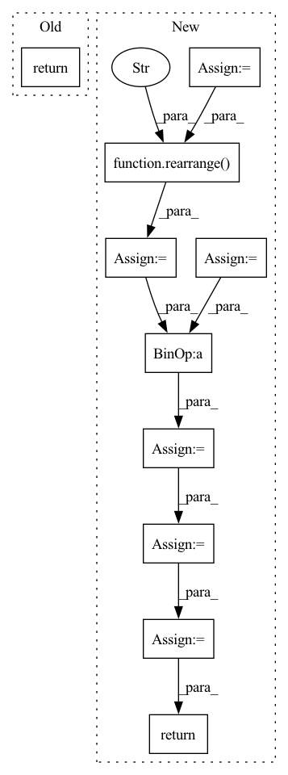

Pattern ID :13296
Before Change
super().__init__()
def forward(self, x):
return x
After Change
def forward(self, x, mask = None):
b, n, device = *x.shape, x.device
x = self.token_emb(x)
pos_emb = self.pos_emb(torch.arange(n, device = device))
pos_emb = rearrange( pos_emb, "n d -> () n d" )
x = x + pos_emb
x = rearrange(x, "b n d -> b d n")
for attn, ff in self.layers:
x = attn(x) + x
x = ff(x) + x
return self.to_logits(x)
In pattern: SUPERPATTERN
Frequency: 3
Non-data size: 10
Instances Fragment ID: 45079855
Project Name: lucidrains/multistream-transformers
Commit Name: 86dac4546b311f7fe7192762abb8979f45722d53
Time: 2021-07-29
Author: lucidrains@gmail.com
File Name: multistream_transformers/multistream_transformers.py
M Class Name: MultistreamTransformer
N Class Name: MultistreamTransformer
M Method Name: forward(3)
N Method Name: forward(2)
M Parent Class: nn.Module
N Parent Class: nn.Module
M File Name: multistream_transformers/multistream_transformers.py
N File Name: multistream_transformers/multistream_transformers.py
M Start Line: 19
M End Line: 19
N Start Line: 120
N End Line: 134
Before Change
super().__init__()
def forward(self, x):
return x
class Teacher(nn.Module):
def __init__(After Change
check_shape(proprio, "b d", d = self.proprio_dim)
check_shape(extero, "b n d", n = self.num_legs, d = self.extero_dim)
latent_extero = self.extero_encoder(extero)
latent_extero = rearrange( latent_extero, "b ... -> b (...)" )
// RNN
if not exists(hiddens):
hiddens = (None,) * len(self.gru_cells)
gru_input = torch.cat((proprio, latent_extero), dim = -1)
next_hiddens = []
for gru_cell, prev_hidden in zip(self.gru_cells, hiddens):
gru_input = gru_cell(gru_input, prev_hidden)
next_hiddens.append(gru_input)
gru_output = gru_input
// attention gating of exteroception
attention_gate = self.to_extero_attn_gate(gru_output)
gated_extero = latent_extero * attention_gate.sigmoid()
// belief state and add gated exteroception
belief_state = self.belief_state_encoder(gru_output)
belief_state = sum_with_zeropad(belief_state, gated_extero)
// to action logits
action_logits = self.to_action_logits(belief_state)
return action_logits, next_hiddens
class Teacher(nn.Module):
def __init__( Fragment ID: 45079918
Project Name: lucidrains/anymal-belief-state-encoder-decoder-pytorch
Commit Name: 31d37d8d81db1d32cbfae83f1e43a669e4c8d5ea
Time: 2022-04-17
Author: lucidrains@gmail.com
File Name: anymal_belief_state_encoder_decoder_pytorch/networks.py
M Class Name: Student
N Class Name: Student
M Method Name: forward(4)
N Method Name: forward(2)
M Parent Class: nn.Module
N Parent Class: nn.Module
M File Name: anymal_belief_state_encoder_decoder_pytorch/networks.py
N File Name: anymal_belief_state_encoder_decoder_pytorch/networks.py
M Start Line: 74
M End Line: 75
N Start Line: 119
N End Line: 157
Before Change
super().__init__()
def forward(self, x):
return x
After Change
// embed both sequence and retrieved chunks
embed = self.token_emb(seq)
retrieved = self.token_emb(retrieved)
// get positional embedding
pos_emb = self.pos_emb(torch.arange(n, device = device))
pos_emb = rearrange( pos_emb, "n d -> 1 n d" )
embed = embed + pos_emb
logits = self.to_logits(embed)
if not return_loss:
return logits
loss = F.cross_entropy(rearrange(logits, "b n c -> b c n"), labels)
return loss
Fragment ID: 45079723
Project Name: lucidrains/retro-pytorch
Commit Name: e737b0c407799969e66abe02d9071e6459c629a0
Time: 2022-01-17
Author: lucidrains@gmail.com
File Name: retro_pytorch/retro_pytorch.py
M Class Name: RETRO
N Class Name: RETRO
M Method Name: forward(4)
N Method Name: forward(2)
M Parent Class: nn.Module
N Parent Class: nn.Module
M File Name: retro_pytorch/retro_pytorch.py
N File Name: retro_pytorch/retro_pytorch.py
M Start Line: 15
M End Line: 16
N Start Line: 66
N End Line: 101